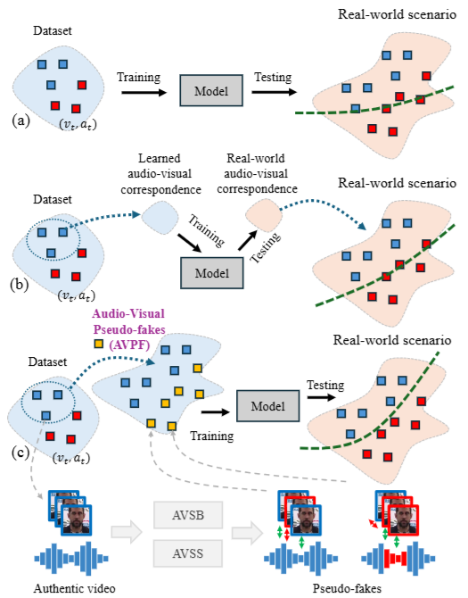
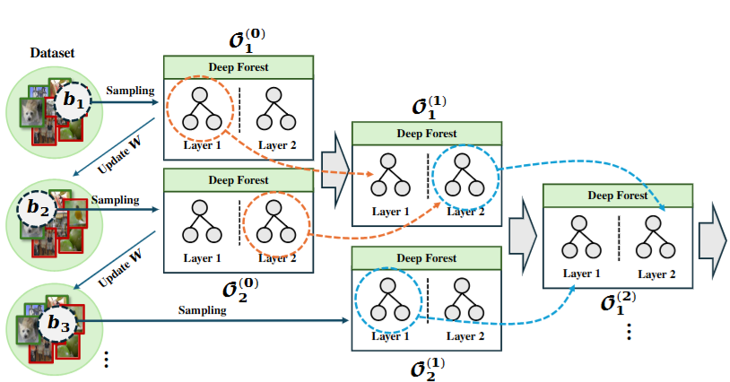
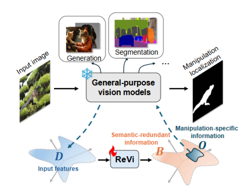
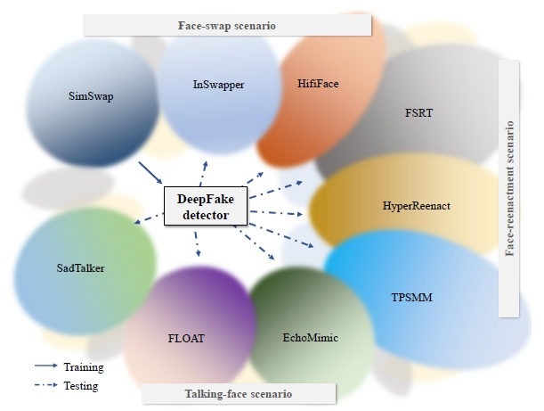
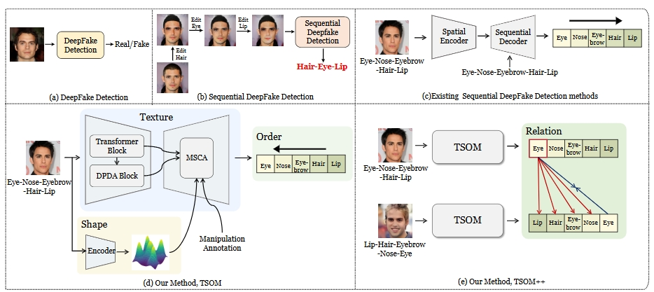
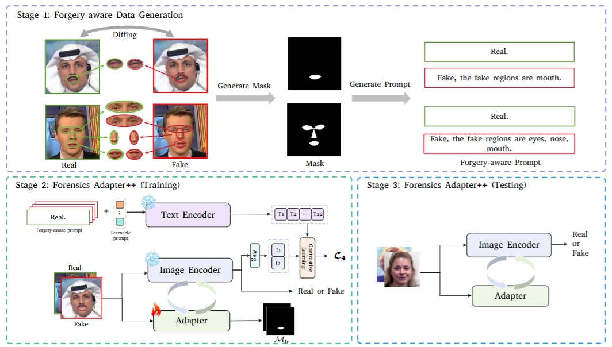
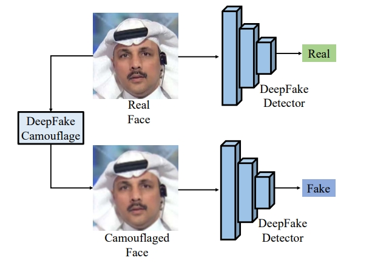
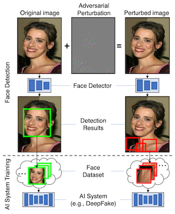

© VAS-Lab

Zihe Wei+, Yuezun Li#
arXiv:2604.09110, 2026.
Code

Mengxin Fu+, Yuezun Li#
arXiv:2604.09106, 2026.
Code

Zhengxuan Zhang+, Keji Song+, Junmin
Hu+, Ao Luo, Yuezun Li#
arXiv:2604.09096, 2026.
Code

Yuezun Li#, Delong Zhu+, Xinjie
Cui+, Siwei Lyu
arXiv:2507.18015, 2025. (An extension of Celeb-DF dataset)
Code

Yunfei Li+, Yuezun Li#, Baoyuan Wu,
Junyu Dong, Guopu Zhu, Siwei Lyu
arXiv:2404.13873, 2025.
(Extended from WACV 2025 (oral))
Code

Xinjie Cui+, Yuezun Li#, Delong Zhu,
Jiaran Zhou, Junyu Dong, Siwei Lyu
arXiv:2411.19715, 2025. (Extended from CVPR 2025)
Code

Pu Sun+, Honggang Qi#, Yuezun Li#
arXiv:2409.03200, 2024.

Yuezun Li, Xin Yang, Baoyuan Wu, Siwei Lyu
arXiv:1906.09288, 2019.
(preliminary version of TDSC 2025)
© VAS-Lab